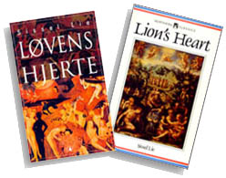

Born in 1942, Sissel Lie has produced a wide variety of works including novels, short stories, academic texts, translations and children's books and works as a professor of French literature and literary theory at the University of Trondheim. Her novel Løvens hjerte is available in Norwegian and in English translation as Lion's Heart.

Sissel Lie's Løvens hjerte |
| A contemporary Norwegian woman looks in the mirror and sees a Renaissance French poetess |
The real Louise Labé (1524-1566) lived in Lyons, France. In 1555, she published Oeuvres, containing elegies, sonnets and the 'Débat entre Amour et Folie.' The preface advised women to make use of their new opportunity to compete with men in scholarship and authorship.
Similar in its richly descriptive language to Helene Cixous's writings and Patrick Suskind's Perfume, Sissel Lie's Løvens hjerte is a blend of Louise Labé's bold, passionately erotic 16th century French poetry and an insecure but determined contemporary Norwegian woman's memoirs.
This novel is a dialogue between past and present, between our interpretations and others' statements, and between Renaissance texts and our own. Louise Labé is alive in Lie's novel as both friend and teacher to the contemporary Norwegian narrator. The text juxtaposes aesthetics from the 16th and 20th centuries in a reexamination of the roles of women in the two times.
|
Cixous, Helene 'Coming to Writing' and Other Essays
Cixous, Helene Helene Cixous, Rootprints : Memory and Life Writing
Cixous, Helene Stigmata : Escaping Texts
Sellers, Susan (ed.) The Helene Cixous Reader
|